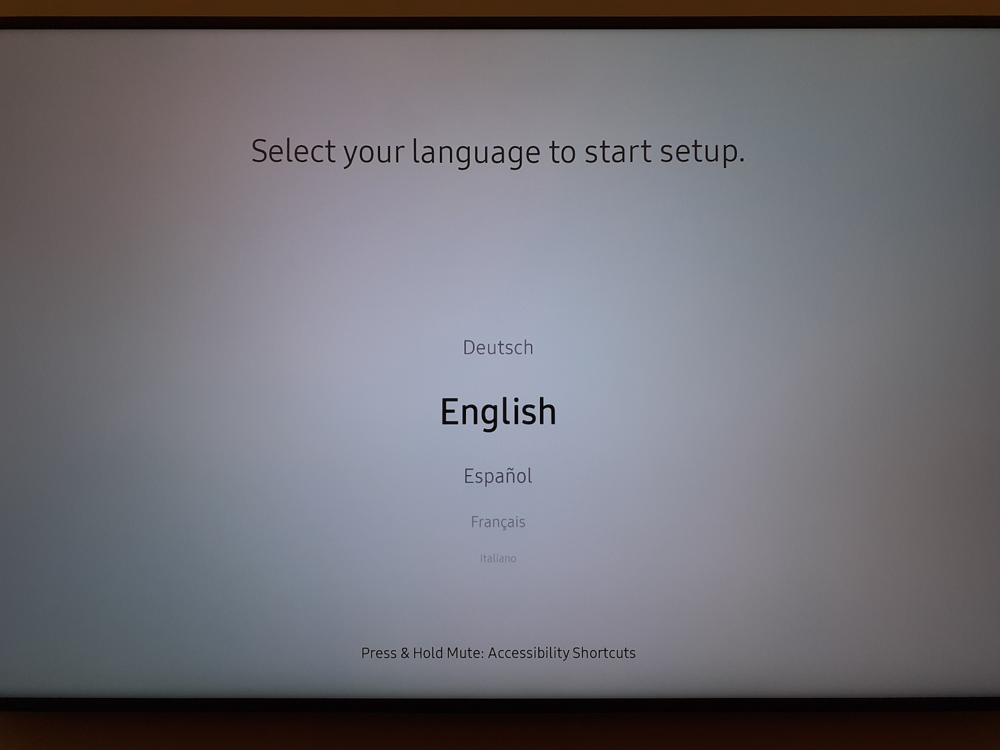
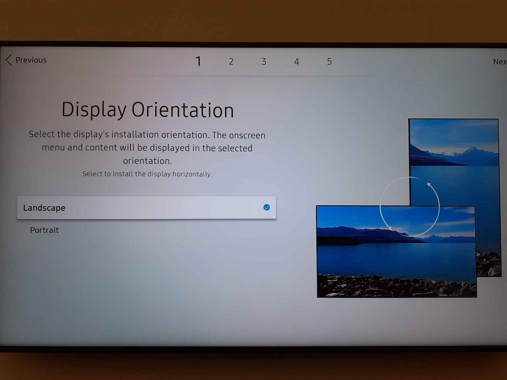
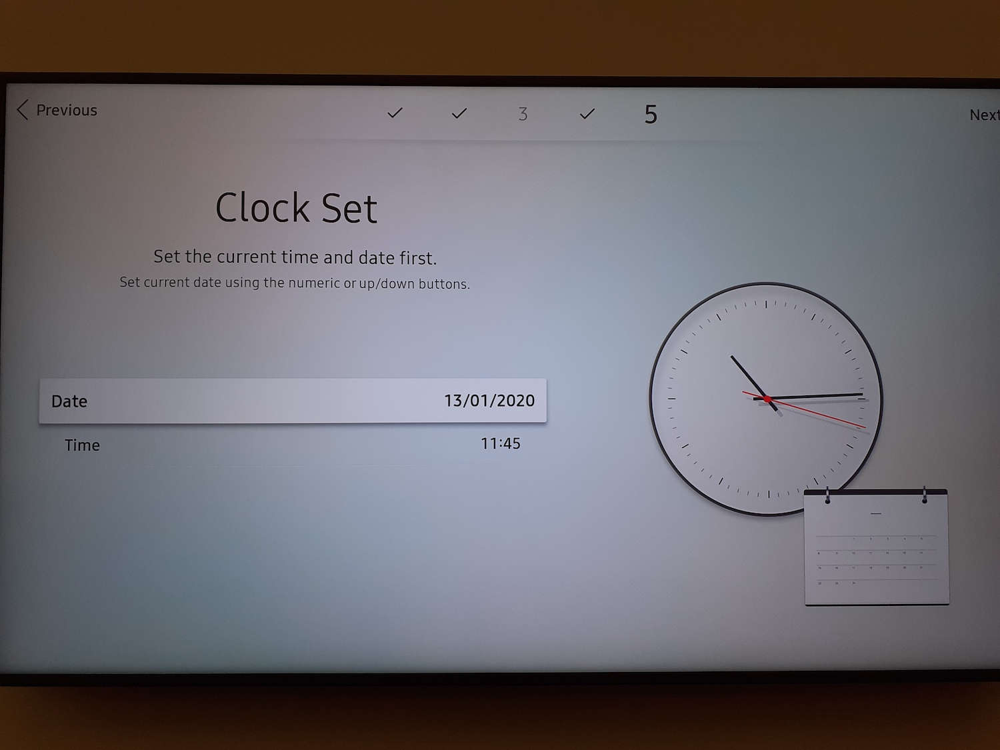
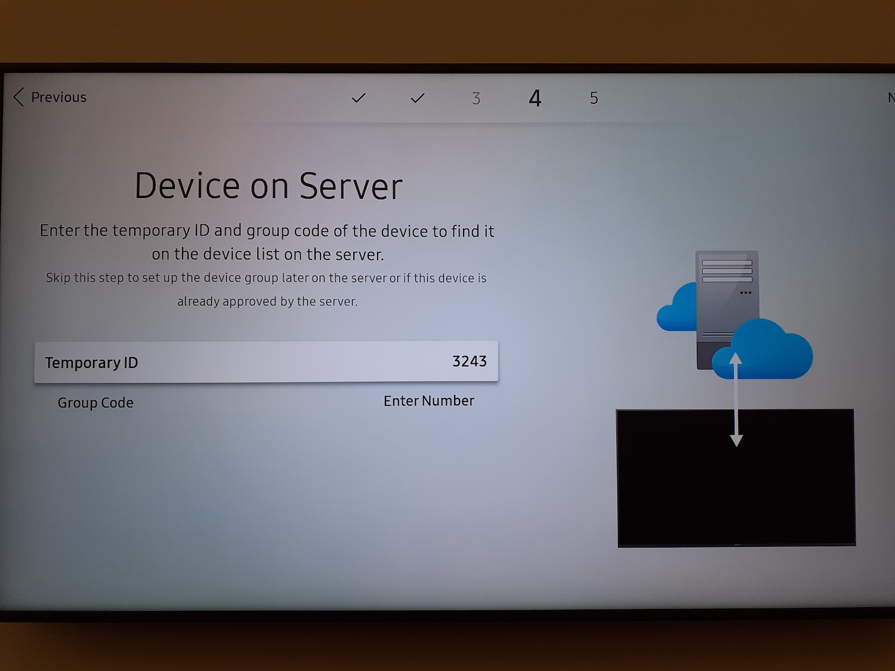
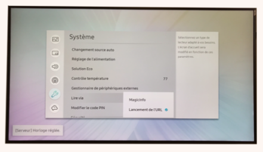

Choose your language
Choose LANDSCAPE as your screen orientation
Auto Power OFF : Let the default parameters on OFF

The screen will automatically search for an internet connectin:
If your is cabled (RJ45 cable), it will conect by itself
You won't be able to install our application if you do not have an internet connection
Do not connect your screen to a guest Wifi network: it might not have enough permission to allow for optimal functionning
For Wifi : pick the desired network and enter the matching password

Connect to Remote Server : Choose to setup now.
Enter the address remote.deepidoo.com
No need to change the other parameters
Correctly setup the time
Device Name : Do not change anything
Finish this step by clicking on 'Finish'
Set up your fixed IP connection.
Click on the 'Home' button -> Network -> OK
Click on 'Param IP' then enter the data given by your Head Quarters
=> IP Config : Choose 'Obtain Manually'
=> IP Adress: Given by your HQ
=> Network Submask: Given by your HQ
=> Gateway : Given by your HQ
=> DNS Server : Given by your HQ

Click on the Menu button -> System -> Read Via -> URL Launcher -> OK
Click on the Home button -> URL LauncherEnter the following URL 'http://tizen.deepidoo.com' and validate by clicking 'Finish'

Enter the code given by Deepidoo, then press OK (If the address showing on screen is your shop's)

My screen has already been setup (time and langiages have been configured)
You're going to setup your network and install our application
Check your network connection:
Click on the home button
Click on 'Network Status'
Confirm
If you ARE connected, go to the next step to install Deepidoo's application

if you are NOT connected, go to next step

Check your network connection:
Click on the home button
Click on 'Network Status'
Confirm
Click on IP Params and enter the network config details given by your HQ
If it is a DHCP network
=> IP Config : Obtain automatically
=> DNS Config: Obtain automatically
If it is a Fixed IP network (secured), select:
=> IP Config : 'Obtain automatically', then enter teh following details
=> IP Adress, Subnet Mask, Gateway
=> DNS Config : 'Obtain automatically' => enter your DNS server
=> Validate by clicking OK
Click on the Menu button -> System -> Read Via -> URL Launcher -> OK
Click on the Home button -> URL LauncherEnter the following URL 'http://tizen.deepidoo.com' and validate by clicking 'Finish'
Enter the code given by Deepidoo, then press OK (If the address showing on screen is your shop's)